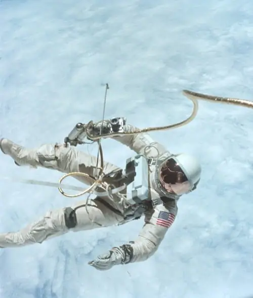

Articles ·
Timeline: 50 Years of Spaceflight

By Space News and SPACE.com Staff | September 28, 2012 02:37am ET
On Oct. 4, 2007, the Space Age celebrated the 50th anniversary of the historic launch of Sputnik, the first artificial satellite, by the former Soviet Union.
The space shot also launched the Space Race to the moon between the United States and the Soviet Union. But despite that turbulent beginning, the initial launch has led to five decades of triumphs and tragedies in space science and exploration.
Below is a timeline by Space News and SPACE.com chronicling the first 50 years of spaceflight. You are invited to walk through the half century of space exploration and click related links for more in depth information:
Sometime in the 11th century: China combines sulfur, charcoal and saltpeter (potassium nitrate) to make gunpowder, the first fuel used to propel early rockets in Chinese warfare.
July 4, 1054: Chinese astronomers observe the supernova in Taurus that formed the Crab Nebula.
Mid-1700s: Hyder Ali, the Sultan of Mysome in India, begins manufacturing rockets sheathed in iron, not cardboard or paper, to improve their range and stability.
March 16, 1926: Robert Goddard, sometimes referred to as the “Father of Modern Rocketry,” launches the first successful liquid-fueled rocket.
July 17, 1929: Robert Goddard launches a rocket that carries with it the first set of scientific tools — a barometer and a camera — in Auburn, Mass. The launch was Goddard’s fourth.
Feb. 18, 1930: The dwarf planet Pluto is discovered by American astronomer Clyde Tombaugh at Lowell Observatory in Flagstaff, Ariz.
Sometime in the 11th century: China combines sulfur, charcoal and saltpeter (potassium nitrate) to make gunpowder, the first fuel used to propel early rockets in Chinese warfare.
July 4, 1054: Chinese astronomers observe the supernova in Taurus that formed the Crab Nebula.
Mid-1700s: Hyder Ali, the Sultan of Mysome in India, begins manufacturing rockets sheathed in iron, not cardboard or paper, to improve their range and stability.
March 16, 1926: Robert Goddard, sometimes referred to as the “Father of Modern Rocketry,” launches the first successful liquid-fueled rocket.
July 17, 1929: Robert Goddard launches a rocket that carries with it the first set of scientific tools — a barometer and a camera — in Auburn, Mass. The launch was Goddard’s fourth.
Feb. 18, 1930: The dwarf planet Pluto is discovered by American astronomer Clyde Tombaugh at Lowell Observatory in Flagstaff, Ariz.
Oct. 3, 1942: Germany successfully test launches the first ballistic missile, the A4, more commonly known as the V-2, and later uses it near the end of European combat in World War II.
Sep. 29, 1945: Wernher von Braun arrives at Ft.
Oct. 14, 1947: American test pilot Chuck Yeager breaks the sound barrier for the first time in the X-1, also known as Glamorous Glennis.
Oct. 4, 1957: A modified R-7 two-stage ICBM launches the satellite Sputnik 1 from Tyuratam. The Space Race between the Soviet Union and the United States begins.
Nov. 3, 1957: The Soviet Union launches Sputnik 2 with the first living passenger, the dog Laika, aboard.
Dec. 6, 1957: A Vanguard TV-3 carrying a grapefruit-sized satellite explodes at launch; a failed response to the Sputnik launch by the United States.
Jan. 31, 1958: Explorer 1, the first satellite with an onboard telemetry system, is launched by the United States into orbit aboard a Juno rocket and returns data from space.
Oct. 7, 1958: NASA Administrator T. Keith Glennan publicly announces NASA’s manned spaceflight program along with the formation of the Space Task Group, a panel of scientist and engineers from space-policy organizations absorbed by NASA. The announcement came just six days after NASA was founded.
Jan. 2, 1959: The U.S.S.R. launches Luna 1, which misses the moon but becomes the first artificial object to leave Earth orbit.
Jan. 12, 1959: NASA awards McDonnell Corp. the contract to manufacture the Mercury capsules.
Feb. 28, 1959: NASA launches Discover 1, the U.S. first spy satellite, but it is not until the Aug. 11, 1960, launch of Discover 13 that film is recovered successfully.
May 28, 1959: The United States launches the first primates in space, Able and Baker, on a suborbital flight.
Aug. 7, 1959: NASA’s Explorer 6 launches and provides the first photographs of the Earth from space.
Sept. 12, 1959: The Soviet Union’s Luna 2 is launched and two days later is intentionally crashed into the Moon.
Sept. 17, 1959: NASA’s X-15 hypersonic research plane, capable of speeds to Mach 6.7, makes its first powered flight.
Oct. 24, 1960: To rush the launch of a Mars probe before the Nov. 7 anniversary of the Bolshevik Revolution, Field Marshall Mitrofan Nedelin ignored several safety protocols and 126 people are killed when the R-16 ICBM explodes at the Baikonur Cosmodrome during launch preparations.
Feb. 12, 1961: The Soviet Union launches Venera to Venus, but the probe stops responding after a week.
April 12, 1961: Yuri Gagarin becomes the first man in space with a 108-minute flight on Vostok 1 in which he completed one orbit.
May 5, 1961: Mercury Freedom 7 launches on a Redstone rocket for a 15-minute suborbital flight, making Alan Shepard the first American in space.
May 25, 1961: In a speech before Congress, President John Kennedyannounces that an American will land on the moon and be returned safely to Earth before the end of the decade.
Oct. 27, 1961: Saturn 1, the rocket for the initial Apollo missions, is tested for the first time.
Feb. 20, 1962: John Glenn makes the first U.S. manned orbital flight aboard Mercury 6.
June 7, 1962: Wernher von Braun backs the idea of a Lunar Orbit Rendezvous mission.
July 10, 1962: The United States launches Telstar 1, which enables the trans-Atlantic transmission of television signals.
June 14, 1962: Agreements are signed establishing the European Space Research Organisation and the European Launcher Development Organisation. Both eventually were dissolved.
July 28, 1962: The U.S.S.R launches its first successful spy satellite, designated Cosmos 7.
Aug. 27, 1962: Mariner 2 launches and eventually performs the first successful interplanetary flyby when it passes by Venus.
Sept. 29, 1962: Canada’s Alouette 1 launches aboard a NASA Thor-Agena B rocket, becoming the first satellite from a country other than the United States or Soviet Union.
June 16, 1963: Valentina Tereshkova becomes the first woman to fly into space.
July 28, 1964: Ranger 7 launches and is the Ranger series’ first success, taking photographs of the moon until it crashes into its surface four days later.
April 8, 1964: Gemini 1, a two-seat spacecraft system, launches in an unmanned flight.
Aug. 19, 1964: NASA’s Syncom 3 launches aboard a Thor-Delta rocket, becoming the first geostationary telecommunications satellite.
Oct. 12, 1964: The Soviet Union launches Voskhod 1, a modified Vostok orbiter with a three-person crew.
March 18, 1965: Soviet cosmonaut Alexei Leonov makes the first spacewalk from the Voskhod 2 orbiter.
March 23, 1965: Gemini 3, the first of the manned Gemini missions, launches with a two-person crew on a Titan 2 rocket, making astronaut Gus Grissom the first man to travel in space twice.
June 3, 1965: Ed White, during the Gemini 4 mission, becomes the first American to walk in space.
July 14, 1965: Mariner 4 executes the first successful Mars flyby.
Aug. 21, 1965: Gemini 5 launches on an eight-day mission.
Dec. 15, 1965: Gemini 6 launches and performs a rendezvous with Gemini 7.
Jan. 14, 1966: The Soviet Union’s chief designer, Sergei Korolev, dies from complications stemming from routine surgery, leaving the Soviet space program without its most influential leader of the preceding 20 years.
Feb. 3, 1966: The unmanned Soviet spacecraft Luna 9 makes the first soft landing on the Moon.
March 1, 1966: The Soviet Union’s Venera 3 probe becomes the first spacecraft to land on the planetVenus, but its communications system failed before data could be returned.
March 16, 1966: Gemini 8 launches on a Titan 2 rocket and later docks with a previously launched Agena rocket — the first docking between two orbiting spacecraft.
April 3, 1966: The Soviet Luna 10 space probe enters lunar orbit, becoming the first spacecraft to orbit the Moon.
June 2, 1966: Surveyor 1, a lunar lander, performs the first successful U.S. soft landing on the Moon.
Jan. 27, 1967: All three astronauts for NASA’s Apollo 1 mission suffocate from smoke inhalationin a cabin fire during a launch pad test.
April 5, 1967: A review board delivers a damning report to NASA Administrator James Webb about problem areas in the Apollo spacecraft. The recommended modifications are completed by Oct. 9, 1968.
April 23, 1967: Soyuz 1 launches but myriad problems surface. The solar panels do not unfold, there are stability problems and the parachute fails to open on descent causing the death of Soviet cosmonaut Vladimir Komarov.
Oct. 11, 1968: Apollo 7, the first manned Apollo mission, launches on a Saturn 1 for an 11-day mission in Earth orbit. The mission also featured the first live TV broadcast of humans in space.
Dec. 21, 1968: Apollo 8 launches on a Saturn V and becomes the first manned mission to orbit the moon.
Jan. 16, 1969: Soyuz 4 and Soyuz 5 rendezvous and dock and perform the first in-orbit crew transfer.
March 3, 1969: Apollo 9 launches. During the mission, tests of the lunar module are conducted in Earth orbit.
May 22, 1969: Apollo 10‘s Lunar Module Snoopy comes within 8.6 miles (14 kilometers) of the moon’s surface.
July 20, 1969: Six years after U.S. President John F. Kennedy’s assassination, the Apollo 11 crew lands on the Moon, fulfilling his promise to put an American there by the end of the decade and return him safely to Earth.
Nov. 26, 1965: France launches its first satellite, Astérix, on a Diamant A rocket, becoming the third nation to do so.
Feb. 11, 1970: Japan’s Lambda 4 rocket launches a Japanese test satellite, Ohsumi into orbit.
April 13, 1970: An explosion ruptures thecommand module of Apollo 13, days after launch and within reach of the moon. Abandoning the mission to save their lives, the astronauts climb into the Lunar Module and slingshot around the Moon to speed their return back to Earth.
April 24, 1970: The People’s Republic of China launches its first satellite, Dong Fang Hong-1, on a Long March 1 rocket, becoming the fifth nation capable of launching its own satellites into space.
Sept. 12: 1970: The Soviet Union launches Luna 16, the first successful automated lunar sample retrieval mission.
April 19, 1971: A Proton rocket launches thefirst space station, Salyut 1, from Baikonur.
June 6, 1971: Soyuz 11 launches successfully, docking with Salyut 1. The three cosmonauts are killed during re-entry from a pressure leak in the cabin.
July 26, 1971: Apollo 15 launches with a Boeing-built Lunar Roving Vehicle and better life-support equipment to explore the Moon.
Oct. 28, 1971: The United Kingdom successfully launches its Prospero satellite into orbit on a Black Arrow rocket, becoming the sixth nation capable of launching its own satellites into space.
Nov. 13, 1971: Mariner 9 becomes the first spacecraft to orbit Mars and provides the first complete map of the planet’s surface.
Jan. 5, 1972: U.S. President Richard Nixon announces that NASA is developing a reusable launch vehicle, the space shuttle.
March 3, 1972: Pioneer 10, the first spacecraft to leave the solar system, launches from Cape Kennedy, Fla.
Dec. 19, 1972: Apollo 17, the last mission to the moon, returns to Earth.
May 14, 1973: A Saturn V rocket launches Skylab, the United States’ first space station.
March 29, 1974: Mariner 10 becomes the first spacecraft to fly by Mercury.
April 19, 1975: The Soviet Union launches India’s first satellite, Aryabhata.
May 31, 1975: The European Space Agency is formed.
July 17 1975: Soyuz-19 and Apollo 18 dock.
Aug. 9, 1975: ESA launches its first satellite, Cos-B, aboard a Thor-Delta rocket.
Sept. 9, 1975: Viking 2, composed of a lander and an orbiter, launches for Mars.
July 20, 1976: The U.S. Viking 1 lands on Mars, becoming the first successful Mars lander.
Aug. 20, 1977: Voyager 2 is launched on a course toward Uranus and Neptune.
Sept. 5, 1977: Voyager 1 is launched to perform flybys of Jupiter and Saturn.
Sept. 29, 1977: Salyut 6 reaches orbit. It is the first space station equipped with docking stations on either end, which allow for two vehicles to dock at once, including the Progress supply ship.
Feb. 22, 1978: The first GPS satellite, Navstar 1, launches aboard an Atlas F rocket.
July 11, 1979: Skylab, the first American space station, crashes back to Earth in the sparsely populated grasslands of western Australia.
Sept. 1, 1979: Pioneer 11 becomes the first spacecraft to fly past Saturn.
Dec. 24, 1979: The French-built Ariane rocket, Europe’s first launch vehicle, launches successfully.
July 18 1980: India launches its Rohini 1 satellite. By using its domestically developed SLV-3 rocket, India becomes the seventh nation capable of sending objects into space by itself.
April 12, 1981: Space Shuttle Columbia lifts off from Cape Canaveral, beginning the first space mission for NASA’s new astronaut transportation system.
June 24, 1982: French air force test pilot Jean-Loup Chrétien launches to the Soviet Union’s Salyut 7 aboard Soyuz T-6.
Nov. 11, 1982: Shuttle Columbia launches. During its mission, it deploys two commercial communications satellites.
June 18, 1983: Sally Ride aboard the Space Shuttle Challenger becomes the first American woman in space.
Feb. 7, 1984: Astronauts Bruce McCandless and Robert Stewart maneuver as many as 328 feet (100 meters) from the Space Shuttle Challenger using the Manned Maneuvering Unit, which contains small thrusters, in the first ever untethered spacewalks.
April 8, 1984: Challenger crew repairs the Solar Max satellite during a spacewalk.
Sept. 11: 1985: The International Cometary Explorer, launched by NASA in 1978, performs the first comet flyby.
Jan. 24, 1986: Voyager 2 completes the first and only spacecraft flyby of Uranus.
Jan. 28, 1986: Challenger explodes 73 seconds after launch, grounding the shuttle fleet for more than two years.
Feb. 20, 1986: The Soviet Union launches theMir space station.
March 13, 1986: A two-cosmonaut crew launches aboard Soyuz T-15 to power up the Mir space station. During their 18-month mission, they also revive the abandoned Salyut 7, and take parts that are later placed aboard Mir.
June 15, 1988: PanAmSat launches its first satellite, PanAmSat 1, on an Ariane 4 rocket, giving Intelsat its first taste of competition.
Sept. 19, 1988: Israel launches its first satellite, the Ofeq 1 reconnaissance probe, aboard an Israeli Shavit rocket.
Nov. 15, 1988: The Soviet Union launches its Buran space shuttle on its only flight, an unpiloted test.
May 4, 1989: The Space Shuttle Atlantis launches the Magellan space probe to use radar to map the surface of Venus.
Oct. 18, 1989: Shuttle Atlantis launches with Jupiter-bound Galileo space probe on board.
April 7, 1990: China launches the Asiasat-1 communications satellite, completing its first commercial contract.
April 25, 1990: The Space Shuttle Discovery releases the Hubble Space Telescopeinto Earth orbit.
Oct. 29, 1991: The U.S. Galileo spacecraft, on its way to Jupiter, successfully encounters the asteroid Gaspra, obtaining images and other data during its flyby.
April 23, 1992: The U.S. Cosmic Background Explorer spacecraft detects the first evidence of structure in the residual radiation left over from the Big Bang that created the Universe.
Dec. 28, 1992: Lockheed and Khrunichev Enterprise announce plans to form Lockheed-Khrunichev-Energia International, a new company to market Proton rockets.
June 21, 1993: Shuttle Endeavour launches carrying Spacehab, a privately owned laboratory that sits in the shuttle cargo bay.
Dec. 2, 1993: Endeavour launches on a mission to repair theHubble Space Telescope.
Dec. 17, 1993: DirecTV launches its first satellite, DirecTV 1, aboard an Ariane 4 rocket.
Feb. 7, 1994: The first Milstar secure communications satellite launches. The geosynchronous satellites are used by battlefield commanders and for strategic communications.
Oct. 15, 1994: India launches its four-stage PolarSatellite Launch Vehicle for the first time.
Jan. 26, 1995: A Chinese Long March rocket carrying the Hughes-built Apstar-1 rocket fails. The accident investigation, along with the probe of a subsequent Long March failure that destroyed an Intelsat satellite, leads to technology-transfer allegations that ultimately result in the U.S. government barring launches of American-built satellites on Chinese rockets.
Feb. 3, 1995: The Space Shuttle Discovery launches anddocks with the Mir space station.
March 15, 1995: Aerospace giants Lockheed Corp. and Martin Marietta Corp. merge.
July 13, 1995: Galileo releases its space probe, which is bound for Jupiter and its moons.
Aug. 7, 1996: NASA and Stanford University researchers announce a paper contending that a 4-billion-year-old Martian meteorite, called ALH 84001, found in Antarctica in 1984, contains fossilized traces of carbonate materials that suggest primitive life might once have existed on Mars. That contention remains controversial.
May 5, 1997: Satellite mobile phone company Iridium launches its first five satellites on a Delta 2 rocket.
June 25 1997: An unmanned Russian Progress supply spacecraft collides with the Mir space station.
July 4, 1997: The Mars Pathfinder lander and its accompanying Sojourner rover touch down on the surface of Mars.
Aug. 1, 1997: The Boeing Co. and the McDonnell Douglas Corp. merge, keeping Boeing’s name.
Feb. 14, 1998: Globalstar, a satellite mobile telephone company, launches its first four satellites on a Delta 2 rocket.
Sept. 9, 1998: A Russian Zenit 2 rocket launches and subsequently crashes, destroying all 12 Loral-built Globalstar satellites aboard. The payload had an estimated value of about $180 million.
Nov. 20, 1998: Russia’s Zarya control module, the first segment of the International Space Station, launches into space and unfurls its solar arrays.
March 27, 1999: Sea Launch Co. launches a demonstration satellite, successfully completing its first launch.
July 23, 1999: The Chandra X-ray observatory, NASA’s flagship mission for X-ray astronomy, launches aboard the Space Shuttle Columbia.
Aug. 13, 1999: Iridium files for Chapter 11 bankruptcy, after being unable to pay its creditors. Iridium Satellite LLC later acquired the original Iridium’s assets from bankruptcy.
Nov. 19, 1999: China successfully test launches the unmanned Shenzhou 1.
July 10, 2000: Europe’s largest aerospace company, European Aeronautic Defence and Space Co., EADS, forms with the consolidation of DaimlerChrysler Aerospace AG of Munich, Aerospatiale Matra S.A. of Paris, and Construcciones Aeronáuticas S.A. of Madrid.
March 18, 2001: After launch delays with XM-1, XM Satellite Radio’s XM-2 satellite becomes the company’s first satellite in orbit when it is launched by Sea Launch Co.
March 23, 2001: After being mothballed in 1999, Mir descends into the Earth’s atmosphere and breaks up over the Pacific Ocean.
May 6, 2001: U.S. entrepreneur Dennis Tito returns to Earth aboard a Russian Soyuz spacecraft to become the world’s first paying tourist to visit the International Space Station.
Aug. 29, 2001: Japan’s workhorse launch system, the two-stage H-2A rocket, launches for the first time.
Feb. 15, 2002: After having trouble selling its satellite mobile phone service, Globalstar voluntarily files for Chapter 11 bankruptcy protection from escalating creditor debt. The company emerged from bankruptcy April 14, 2004.
Feb. 1, 2003: The Space Shuttle Columbia disintegrates as it re-enters the Earth’s atmosphere, killing the crew. Damage from insulating foam hitting the orbiter’s leading wing on liftoff is later cited as the cause of the accident.
Aug 22, 2003: The VLS-V03, a Brazilian prototype rocket, explodes on the launch pad at Alcántara killing 21 people.
Aug. 25, 2003: NASA launches the Spitzer Space Telescope aboard a Delta rocket.
Oct. 1, 2003: Japan’s two space agencies, the Institute of Space and Astronautical Science and the National Space Development Agency of Japan, merge into the Japan Aerospace Exploration Agency.
Oct. 15, 2003: Yang Liwei becomes China’s first taikonaut, having launched aboard Shenzhou 5.
Jan. 4, 2004: The first Mars Exploration Rover, Spirit, lands on Mars. Its twin, Opportunity lands Jan. 25.
Jan. 14, 2004: President George W. Bush advocates space exploration missions to the moon and Mars for NASA in his Vision for Space Exploration speech.
Sept. 20, 2004: India launches its three-stage Geosynchronous Satellite Launch Vehicle for the first time.
Oct. 4, 2004: Scaled Composites’ SpaceShipOne piloted craft wins the X Prize by flying over 100 kilometers above Earth twice within two weeks.
July 26, 2005: Discovery becomes the first shuttle to launch since the Columbia disaster more than two years before. While the crew returned safely, the loss of several pieces of foam debris prompted further investigation, which delayed future shuttle missions.
Oct. 12, 2005: A two-taikonaut crew launches aboard the Chinese Shenzhou 6.
Oct 19, 2005: The last of the Martin Marietta-built Titan 4 heavy-lift rockets launches.
Jan. 19, 2006: New Horizons, NASA’s first-ever mission to the dwarf planet Pluto and its moons, launches atop an Atlas 5 rocket from Cape Canaveral, Florida. Flies past Jupiter one year later in what is billed as NASA’s fastest mission to date.
July 3, 2006: Intelsat acquires fellow fixed satellite service provider PanAmSat for $6.4 billion.
July 4, 2006: NASA’s second post-Columbia accident test flight, STS-121 aboard Discovery, begins a successful space station-bound mission, returning the U.S. orbiter fleet to flight status.
Sept. 9., 2006: NASA resumes construction of the International Space Station with the launch of the shuttle Atlantis on STS-115 after two successful return to flight test missions. Atlantis’ launch occurs after nearly four years without a station construction flight.
Oct. 11, 2006: Lockheed Martin completes the sale of its majority share in International Launch Services to Space Transport Inc. for $60 million.
Jan. 11, 2007: China downs one of its weather satellites, Fengyun-1C, with a ground launched missile. In doing so, China joins Russia and the United States as the only nations to have successfully tested anti-satellite weapons.
April 6, 2007: The European Commission approves the acquisition of French-Italian Alcatel Alenia by Paris-based Thales, thus creating satellite manufacturer Thales Alenia Space.?
Aug. 8, 2007: NASA’s Space Shuttle Endeavour launches toward the International Space Station on the STS-118 construction mission. The shuttle crew includes teacher-astronaut Barbara Morgan, NASA’s first educator spaceflyer, who originally served backup for the first Teacher-in-Space Christa McAuliffe who was lost with six crewmates during the 1986 Challenger accident.
Sept. 27, 2007: Dawn, the first ion-powered probe to visit two celestial bodies in one go, launches on an eight-year mission to the asteroid Vesta and dwarf planet Ceres, the two largest space rocks in the solar system.
Oct. 1, 2007: NASA astronaut Peggy Whitson, the first female commander of the International Space Station, prepares for an Oct. 10 launch with her Expedition 16 crewmate Yuri Malenchenko and Malaysia’s first astronaut Sheikh Muszaphar Shukor. Whitson, and NASA’s second female shuttle commander Pamela Melroy, will command a joint space station construction mission in late October.
Oct. 4, 2007: The Space Age turns 50, five decades after the historic launch
Migrated from the AUASS website archive as published, with the formatting tidied.